Instituto de Pesquisas Psíquicas Imagick
Os Mistérios Eleusianos
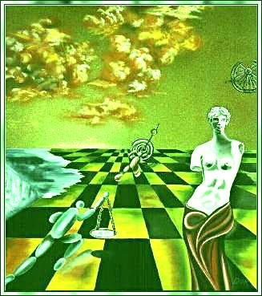 por: Julio Cesar Guerrero - Nuvem que passa
Este texto foi motivado em uma lista de debates quando houve um questionamentos sobre ritualizar em cima dos mistérios Eleusianos.
Li sobre os Mistérios Eleusianos.
Hora, se são mistérios, são secretos, há um velho adágio sobre o tema: “Quem sabe não fala” .Creio que ainda existam, até hoje, os mistérios que estiveram também em Eleusis, mas não creio que seja possível descobrir sobre os mistérios via livros ou informes de terceiros.
A Era que vivemos é de abertura e desenvolvimento sim, mas vamos observar como também os sistemas fundamentalistas continuam presentes, tanto na religião como na política e a ameaça inquisitorial não está tão longe assim como pensam os mais afoitos.
Podemos saltar para uma nova ERa onde nossas utopias mais intensas serão pálidos sonhos perto da realidade, mas podemos também mergulhar numa era de maior opressão e escravidão que as já existentes.Os mistérios estiveram presentes em todas as culturas.
Se investigarmos com profundidade veremos que os monumentos como as pirâmides egípcias, a Esfingie, as construções em Angkor e muitos outros locais no mundo os resquícios de uma ancestral civilização planetária existem, só fazem sentido em orientação astronômica se recuamos o céu como ele era há mais de 10.000 anos.Então algo ocorreu e eles e elas se foram e o saber, parte desse saber ou mesmo sua totalidade, ficou guardado por grupos de pessoas que vieram transmitindo essa ARTE.
Noto que os caminhos percorrem uma existência muito sutil. Quando um grupo chega a ser narrado em obra literária é porque sua estrutura efetiva já mudou completamente, vide exemplo do caminho Tolteca do novo nagual.
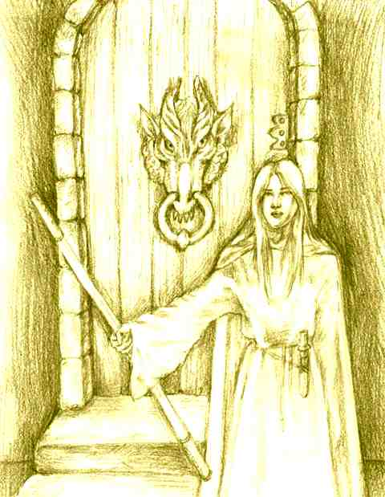 Um dos princípios dos mistérios está assentado no juramento dos (as) iniciados (as) em manter segredo sobre o que ali aprendem.
Tanto que ao estudarmos a história grega vamos ver citações das cerimônias Exotéricas e os historiadores só citam que os mistérios existiam e o que havia neles ninguém sabe, só conjecturas.
Já viram as conjecturas que pessoas simples numa cidade do interior podem fazer sobre o que existe numa loja maçônica? Ainda mais se “ajudadas” por “sacerdotes piedosos” .
Vendo tais deturpações fico pensando o quanto se deturpou do que ouvimos dizer sobre nossos antepassados.
Parece que este lado tem sido pouco observado pelos eS(?)otéricos modernos.
Que desde a mais remota antigüidade temos ritos, práticas e conhecimentos eXotéricos, que são dados aos que participam de certo tipo de cerimônias, aberta.
Mas existem também outros ritos, práticas e conhecimentos eSotéricos , só partilhados com aqueles (as) que são chamados iniciados”(as).Estudando ritos de outras sociedades, como os ritos das nações africanas e outros povos nativos quer das hoje chamadas Américas, quer de outros continentes vamos encontrar no campo mágico essa mesma divisão.
Ritos e celebrações das quais todos participavam, um corpo de doutrina aberto e ensinado a todos do povo e um conjunto de ritos e cerimônias só acessíveis aos (às) iniciados nos cultos.
Gostaria de lembrar também que antes da iniciação existiam as “provas iniciáticas” , que demonstravam se o (a) neófito(a) estava realmente pronto a entrar nos círculos mais internos da Irmandade guardiã da Tradição que lhe era acessível.
Como vivemos numa cultura moralista temos o vício de compreender tais provas como provas de caráter apenas comportamental, dentro de preceitos estáticos, mas quando se trata de MAGIA, quando se trata da ARTE , as provas determinavam aqui a habilidade efetiva de cada neófito(a) de mergulhar em outros estados da realidade e dele voltar.
Para ir a outros mundos, para ir além destes estados tidos por “normais” oser precisa de energia, de vontade e de intenção firme.E aqui entramos nas nuances dos Arcanos maiores que ensinam há Eras, revelando sobre o Caos que cada um deve ter dentro de si para poder dar a luz a uma estrela cintilante (parafraseando Nietzsche)
Por isso existiam as provas inciáticas.
Tais provas podiam levar até mesmo a Morte do (a) candidato e em muitos casos certos níveis de falhas condenavam a uma vida como escravos em templos ou escolas .
Este é um bom adendo para uma discussão nos meios “ocultistas” sobre iniciações.
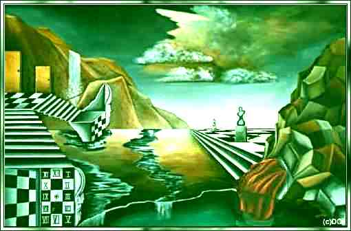 A cerimônia simbólica da iniciação apenas deflagra toda uma série de conexões muito mais amplas em quem por ela passa.
Somos complexas unidades biológicas que temos a habildiade de processar as mais diferentes energias e substÂncias.
Temos uma ilusão de unidade que pode ser atingida , mas não me parece real na condição “natural” de cada ser.
Existem práticas diversas em várias escolas que revelam com clareza esse dado:Somos multidão interior agregados em ilusórios invólucros que se julgam ”eu”.
Enquanto cultura estamos impregnados de valores dos sistemas dominadores sobre nós impostos nestas eras que temos passado.Creio mesmo que fomos arrebanhados por entes poderosos que nos transformaram nessa massa informe de servos e de mendigos, implorando por migalhas de um todo que nos pertence por direito natural.
Um homem ou uma mulher que se atreve a trilhar o caminho da Magia é antes de mais nada alguém que sabe que deve se libertar de todo o lixo conceitual que esta era de escravos nos condicionou a ter por “verdades” .
Não é um caminho fácil, mas há algo neste caminho que nos dá mais forças a medida que o trilhamos, me recorda certa citação que li, um texto falando sobre Alquimia.
“A pedra filosofal representa dessa forma, o primeiro degrau suscetível de auxiliar o homem a elevar-se em direção ao Absoluto. Para além começa o mistério.
Aquém não há mistério, nem esoterismo, nem outras sombras , exceto as que projetam os nossos desejos e sobretudo o nosso orgulho.
Mas como é mais fácil nos satisfazermos de idéias e de palavras do que fazer qualquer coisa com as próprias mãos, com a nossa dor e a nossa fadiga, no silêncio e na solidão, é mais cômodo procurar um refúgio no pensamento
”puro” do que nos batermos corpo a corpo contra o peso e as trevas da matéria.
A alquimia proíbe qualquer evasão desse gênero aos seus discípulos.
Deixa-os frente a frente com o grande enigma.
Apenas nos assegura que se lutarmos até o fim para nos libertarmos da ignorância, a própria VERDADE lutará por nós e vencerá finalmente todas as coisas.
Talvez comece então a verdadeira metafísica.”Renné Alleau
Prefácio à obra de le Breton
Le dis de la philosophie e Spagyrique
Editions Caractéres - Paris
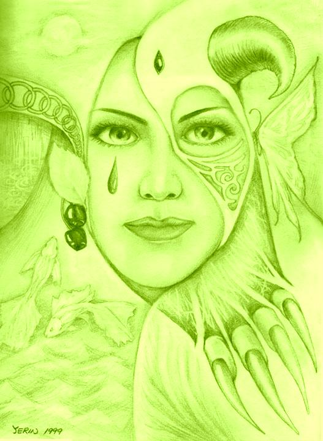 Esta questão me parece muito séria:
A vulgarização do esotérico. A fantasia sobre iniciação, o perder do sentido de fazer parte de uma egrégora, de receber o “toque” da Tradição.Cada linhagem tem seu poder, sua BARAKA”.
É este poder que emana da Fonte sem fonte e pulsa pelos mundos que cria a energia necessária para permitir a percepção efetiva de nossa realidade existencial.Do contrário, tenho notado que o caminho acaba levando a queda nas fantasias de nossos egos, de nossas carências e
medos e seremos apenas títeres a mais de entes poderosos que dominam os seres humanos, fingindo serví-los.
Mas aqui estamos falando sobre iniciações em Irmandades, em grupos formais onde o saber das Eras é cultivado e ampliado, onde os (as) iniciados (as) aprendem e ensinam.
Mas há outro caminho.
A própria Terra é um ser vivo.
Um homem ou uma mulher pode, se tiver poder pessoal e firme intenção para tal, se consagrar a Terra mesmo.
Pois todo homem e toda mulher são estrelas e podem descobrir por si, pelos intricados caminhos que a ETErnidade usa para tocar alguns seres, que podem brilhar por si, que podem ser sujeitos de sua vida e não objetos, que podem construir sua história e não sofrer uma história pronta.
Existe o caminho da livre iniciação, a TERRa enquanto ser consciente pode se reconectar por si mesma a um ser que nem mesmo tenha procurado isso, tudo isso é possível, por isso evitamos muito tecer juízos finais sobre caminhos outros que não os nossos.
Se realmente aceito(a) aquele que assim se inicia não tem como se enganar.
Com uma força inequívoca, que crescerá ainda mais, o conhecimento lhe virá de outra forma que não a apenas intelecutal, o SABER virá, sussurrado pelo vento, nos elementos da natureza, como augúrios, nos encantos da Vida.
Caberá a quem este estado despertou não permitir que medos ou carências interfiram aqui , fazendo leituras equivocadas desses conhecimentos diretos que a própria essência da realidade coloca à seus(uas) iniciados(as)
A ARTE está assim ao mesmo tempo bem guardada, bem zelada e é a pessoas escolhidas ensinada, enquanto está numa escola tradicional, mas também está viva e presente na NATUREZA, na VIDA e por ser consciente pode também entrar em sintonia conosco e nos ensinar diretamente.
Algumas escolas chamam isso de conhecimento silencioso, herança nossa, tantas vezes perdida por desconhecimento.
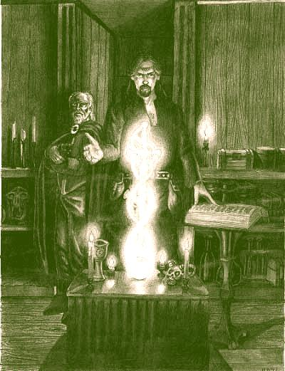 Parece que muita da fantasia do movimento mágico moderno vem de uma confusa abordagem da rica realidade da ARTE.
Trilhar um caminho tradicional me parece bem diferente de “seguir” .
Imitar maneirismos, imitar formas, imitar gestos, imitar mesmo cerimônias sem nem compreender o que de fato está se fazendo é uma coisa.Outra bem diferente é estudar com profundidade a ARTE e compreender na prática seus mistérios.
A ARTE, que a principio, só se mostra em seus fragmentos, pois foi propositadamente perseguida e tentaram ao máximo apagá-la mesmo da história.
A ARTE está bem além dos paradigmas recentes que nos dominam.Temos que fazer uma avaliação bem séria do que estamos estudando quando dizemos que estamos lidando com a ARTE.
A ARTE é conhecimento vivo, e conhecimento vivo tem a inquietante capacidade de se colocar ativamente presente em nossa vida.
De rir de nossas fantasias rebuscadas e de revelar que a realidade, o cotidiano é tão ou mais mágico que os cenários que muitas vezes criamos em nossas fantasias mágicas.
Quando realizamos ritos estamos na realidade atualizando mitos.
Isto é, mitos distantes, formas arquetipais, forças originais, surgidas em outros contínuos espaço temporais, mesmo além de tudo que compreendemos por espaço tempo, são atraídas para nosso círculo mágico quando ritualizamos.
Entramos em sintonia com outros mundos e com as outras criaturas, de índole diversa que habitam estes outros mundos.
Ainda temos muita magia fantasiosa, onde pessoas acreditam mesmo que entes de mundos estranhos a esse se comunicam na nossa língua, algo como a fantasia americana que o universo fala inglês.
Podemos ter mesmo o contato com seres de outros mundos e ainda assim fantasiar o que realmente ocorreu.
Há meu ver muitos dos ditos casos de abdução é por aí.
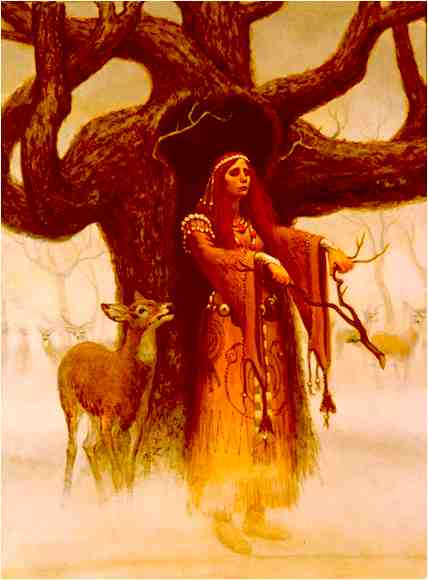 Ritos são complexas operações onde portas entre mundos se abrem e muito pode ser trocado.
Há dois tipos de ritos.
Os ritos pessoais e os ritos míticos.No rito pessoal cada um constrói dentro de sua compreensão e simbologia, dentro de sua mitologia pessoal, uma cerimônia com a qual dialoga com os poderes circundantes em agradecimento, em harmonização, em pedido, enfim, com um certo propósito, pois propósito é uma das chaves de qualquer ação mágica.
Há outro tipo de ritos, os ritos míticos.
Esses são feitos com precisão milimétrica, cada parte do rito já está estabelecida, aqui não podem existir “adaptações” .
É uma linguagem que nos liga a um outro tempo, além de nossa habilidade de conceber.
Cada mínimo ato num rito deste é carregado de significado e é realizado com um propósito específico.
Tais ritos só são transmitidos de boca para ouvido, de observar quem faz e fazer por si.
Estes ritos carregam consigo o acúmulo de gerações de magistas que reforçaram com sua prática e sua consciência a força implícita no rito.Os dois ritos tem suas funções e seus objetivos a diferença é que o poder do rito mítico é o poder pessoal deu quem o realiza mais o poder somado das incontáveis gerações, dos incontáveis homens e mulheres que reforçaram com sua própria consciência esse tipo de rito.
Uma das bases do conhecimento esotérico reside no entender desta dualidade.
Há dois momentos na vida do ser humano, por isso não é de se espantar que psique e borboleta sejam tão próximas em significação.
TEmos um primeiro momento no qual somos resultante da vida e de suas forças, quando pouco ou nada agimos, apenas reagimos, quando pouco ou nada sentimos, apenas nos emocionamos, quando pouco ou nada pensamos, apenas
raciocinamos.
Mas há a possibilidade da lagarta, tendo ousadia de recolher-se ao lugar silencioso em si mesmo, gerar a crisálida que permitirá a transformação.
Mas falar da transformação é adiantar-se, pois primeiro precisamos falar de nós mesmos estarmos aqui e agora, presentes no mágico momento que é a única coisa que existe: O presente.
Nosso maior presente.
Antes de pensarmos em despertar a borboleta em nós, temos que ter a plenitude da fase lagarta realizada, pois é a força desenvolvida pela lagarta que vai levar a borboleta a brotar.
É a saudade do vôo, presente de forma imprecisa na lagarta que se agarra a folha, que semeia o nascer das asas na borboleta que virá.
Em toda tradição temos uma primeira fase de trabalho que é eXotérica e só então, se passamos “nas provas iniciáticas” vamos aos níveis eSotéricos da ARTE.
É claro que a arrogância e a vaidade em alguns(as), noutros (as) o medo e as carências, acabam por vencer e então, arrogam-se posições, visões, segredos, conhecimentos únicos e no fundo verão sempre alguém que por insegurança estará tentando se mostrar e sentir melhor que os a sua volta.
Criar fórmulas prontas, receitas de bolo para gerar o corpo de energia, para lidar com o mutável e surpreendente transcendente me parece de todo imprudente.
Me lembra de uma tirinha daquela baratinha que recomenda a uma lesma:
”Vá para casa e faça o que eu lhe recomendei, sinto más vibrações em você”
Em certo momento a barata se lembra de um detalhe e sai correndo mas é tarde, encontra a lesma se derretendo, a barata apenas grita, debilmente:
“Não, banho de sal grosso , não...”Cada caso um caso, temos que parar de pensar como manada.
”Vaca profana põe teus cornos, prá fora e acima da manada”
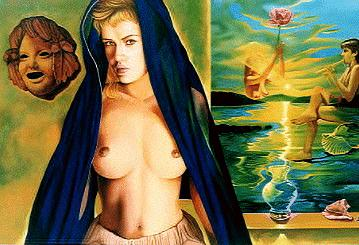 Vivemos em uma época Holística sem dúvida, mas Holos não é dissolução, não é perda da própria identidade num mesclar sincrético sem bases efetivas.
Holos é ir além das fronteiras convencionadas, mas com elementos cognitivos efetivos.
Dai que precisamos antes de ir ao Todo conhecer as partes.
Ok!
É tudo ilusório, tudo maya, tudo um grande mitote.
Entretanto compreender estas formas maiavicas de existência tem sua função nos arranjos perceptivos ulteriores que são necessários à entidade perceptiva que somos.Por isso é interessante, ao menos por um tempo, conhecer um caminho e se dedicar a ele.
Trilhar esse caminho até atingir a unidade com esse caminho.
Todas as pessoas sérias ligadas a ARTE que conheci (e algumas riam muito) insistem nisso:
Primeiro precisamos aprender a fazer algo bem feito, depois nos expandimos...O sincretismo mais ou menos, o mesclado de conceitos vindos de diversas tradições, pinçado aqui e acolá, não me parece base segura para quem realmente deseja adentrar outras realidades da existência.
O auto engano das experiências anímicas e geradas por fantasia não tem muita procedência na ARTE.
Sacudir energias, agitar a luz astral, atrair espectros e entes diversos tem sido tomado como magia.
Brincar com instrumentos da magia não faz de alguém magista, tal como alguém brincar com instrumentos cirúrgicos, desconhecendo inclusive suas reais utilidades, não faz de ninguém um médico.Temos que estar alertas ao sondarmos outros mundos para entes que vagam por aí.
Entes que poderão sondar nossos campos mentais e campos emocionais (notem que falo campos não corpos) para com as informações colhidas ali nos manter em engodo, em ilusão.Isto não é a ARTE.
Bordejar realidades espectrais, transes sem controle, fagulhas de algo que está sempre além enquanto a vida real, o aqui e agora está em crise e mal resolvido, creio que não é disto que falamos aqui.É muito fácil entrar em sintonia com cascões astrais, com larvas e entes de vários tipos que em troca da adulação a vaidade, com o uso inteligente dos medos e carências interiores de tantos, com estímulo a cobiça e a preguiça que reina em tantos, conseguem viver da energia de quem se julga “magista dominando anjos e demônios”
Mas para nós magistas naturais o interesse é outro, o interesse está em conectarmos com a força maior que temos no inicio de nossa jornada rumo ao infinito.
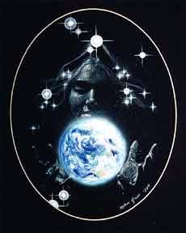 A TERRA
O ser no qual vivemos, do qual somos parte.
Quando começamos nosso caminho de busca da ARTE estamos Desconectados da TERRA.
A TERRA enquanto ser vivo, enquanto ser consciente no qual estamos inseridos.Para criar nosso corpo físico dois seres interagiram.
Em última instância a energia telúrica e a Solar nos criaram.
Assim a Terra e o Sol são nossas primeiras forças geradoras e motrizes.A Terra é a Grande Mãe.
Que nos alimenta, quem nos dá tudo que somos , a matéria essencial de nosso ADN , o ar que respiramos , enfim tudo que temos vem da TERRA.
A TERRA nos mantém enquanto a força vital está em nós, quando esta se vai é a mesma TERRA que se abrirá e receberá o corpo que ela criou e alimento em seu interior e o fará novamente partículas em movimento, integrando outros organismos complexos dessa magia chamada VIDA.Fantasias de ficção cientifica de vivermos em naves e estações espaciais estão tão impregnadas na imaginação coletiva, por trabalho ativo dos condicionadores deste sistema, que as pessoas se esquecem que pode existir um mundo alternativo a este terror de Blade Runner, esse mundo estéril e sem vida que os cultores da destruição desejam incutir como único possível.
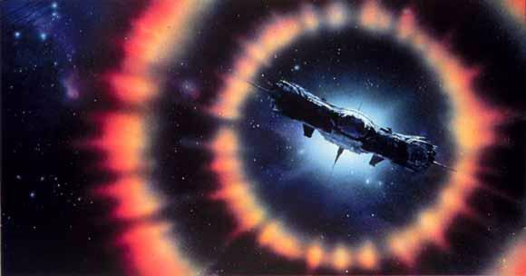 Basta observar um pouco o resultado das pesquisas espaciais para perceber que tirando as telas dos cinemas e das TVs as fantasias de naves e um mundo estéril, sem vida, só tecnologia é algo bem pouco praticável.
O tema fica mais interessante quando temos relatos de pessoas que tiveram contato mais profundo com tripulantes das pretensas “naves” que nos visitam e foram informadas que são mais entes biológicos que máquinas, tais naves.
Mas isto fugiria ao tema central agora .
Uma civilização que una a tecnológica a vida natural é uma esperança concreta de sobrevivermos ao Caos ecológico e social que construímos por nossa ação direta ou omissão.
Quando falamos em recuperar a TRadição não se trata de abandonar tudo que aprendemos nestes séculos de domínio dos tiranos, mas usar este conhecimento específico chamado ciência para ampliar nossa habilidades Mágicas.
Se a ARTE está além da ciência podemos entretanto levar a ciência a se expandir até a Magia.
Podemos expandir a ciência até que ela se equipare a imensidão da ARTE, ao invés de tentar limitar a ARTE aos estreitos paradigmas mecanicistas desta era e julgar inexistente algo, por não ter capacidade de compreender.Agora com a abordagem quântica da realidade, com a percepção que o estudo da genética e da biologia molecular, entre outras áreas, a Ciência começa a ter condições de entender os mistérios da ARTE.
Querer que a ARTE seja compreensível à ciência ainda nascente é querer obrigar um ancião a transmitir sua experiência a um adolescente.
Falta vivência e amplitude perceptiva ao adolescente, ele terá que passar por eventos efetivos para ampliar sua flexibilidade perceptual até abranger os diferentes modos conceituais de quem já muito viveu.
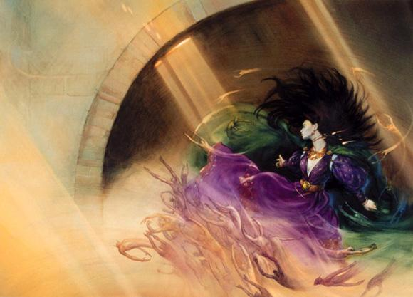 A ciência está no mesmo momento.
Tem seu talento, tem fôlego, tem um futuro promissor, mas precisa de vivências reais, não ficar nas mãos de homens e mulheres que tentam isolar a vida, como quem faz estudos de todo um rio baseado apenas em um trecho do mesmo.
Será especialista em trechos com pouca correnteza, mas o que fará quando o rio se tornar cachoeira?Assim como o jovem também pode ajudar o ancião a ventilar seus conceitos a percebe-los de forma ainda mais ampla , a ciência tem uma metodologia de trabalho que pode ajudar também a ciência das Idades, a ARTE.
A Ciência hoje está limitada.
Assim está, por estar presa aos métodos resultantes destes paradigmas dominantes.E da mesma forma quando nos aproximamos da ARTE temos então que reavaliar com cuidado os paradigmas que trazemos conosco.
Do contrário impregnaremos com nossos limites a imensidão da ARTE, faremos como certas pessoas que ao invés de usar os elementos da ARTE como alavanca para mover-se para além deste estado medíocre que costumamos viver, usam a ARTE para justificar seus limites e medos, criando fantasias diversas, onde se preocupam mais com a imagem que com a essência.
A ARTE é essencialmente PAGÃ!
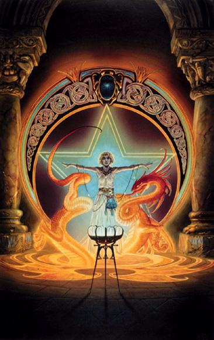 Se recuperamos o elo com a TERRA recuperamos o elo com a vida.
E não me perguntem o que é ser pagão.
SER pagão não se define, se vive e pronto.
Não espera reconhecimento, só sabe no seu mais profundo ser :”SOU”..Vejam o Sol.
Por quanto tempo se matou na Terra, quanto tempo donos de um dos impérios do mundo obrigaram seus súditos e seguidores aceitar que a Terra é era o centro do universo, que o Sol girava ao redor da Terra?E lhes pergunto: Por um só instante isso aconteceu?
Deixou o Sol de seguir seu curso preciso, como o suceder das estações demonstra ter ocorrido?Entrar em harmonia com a VIDA!
Estar em harmonia com a DEUSA,. sendo a VIDA, a TERRA, a NATUREZA, expressões, faces mesmo da DEUSA.
MAs aí vem os paradigmas antropomórficos.
Estes sim, fraquezas da velha era.E fantasiamos, damos a Deusa a mesma roupagem que ela tinha em nossas fantasias como “Nossa Senhora”, alguma santa, alguma entidade feminina que para nós é expressão de poder.
Por outras vezes criamos um Jeová de saias.Tudo bem, sem problemas, “prá” quem quer ficar na mesma, “belessa”.
Mas, para quem deseja trilhar o caminho pagão temos que nos recordar que pretendemos restabelecer conexão com a “alma” de povos que não eram limitados, que eram amplos e buscavam a realidade direta.
Para eles se a terra respondia ou não a seus ritos e cerimônias, era vital.
O que estava em jogo em Beltane era mesmo o plantio, nos festivais da semente era uma consagração verdadeira a Terra, coisa difícil de entender para quem hoje depende de fertilizantes e adubos, pesticidas e outros apoios químicos que contaminam e degradam o meio enquanto garantem apenas “mais uma safra rentosa” .Do jeito que estamos em alguns lugares teremos pessoas se dizendo Wiccas e pagãs e “rezando” à Deusa : “Oh Deusa, sei que não digno(a) que entreis em minha morada, mas dizei uma palavra e serei salvo(a).”
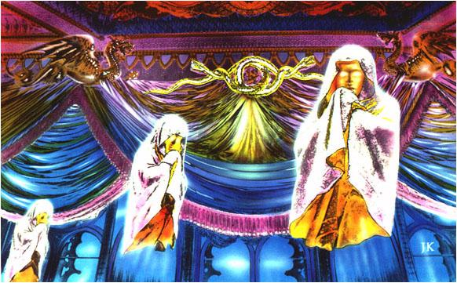 Podem rir, mas para mim seria mais “prá” chorar lembrar que tantos homens e mulheres deram suas vidas nas fogueiras da Inquisição para que continuássemos servos de servos , clamando por migalhas de um todo que nos pertence.
A ciência arrogou-se o direito de controlar nosso pensar e nossa maneira de sondar a realidade a nossa volta.
A religião arrogou-se o direito de ser a única detentora do segredo do transcendente, de ser a única capaz de ligar-nos a ETERNIDADE.
A filosofia oficial arrogou-se o direito de determinar como podemos ”refletir “ sobre o mundo e a existência.
O que chamamos de Neo paganismo é justamente um romper destes “acordos”, destes “contratos sociais” que nos impuseram e ao qual cedemos sem perceber.
O Neo paganismo é recuperar uma autonomia moral e intelectual efetiva para podermos tomar nossas próprias decisões não mais coagidos pelos medos e condicionamentos desse sistema feitor de escravos, mas podermos ao contrário AGIR de fato e não apenas reagir.
Neo paganismo é atitude.
E atitude acontece .
O resto é fantasia.
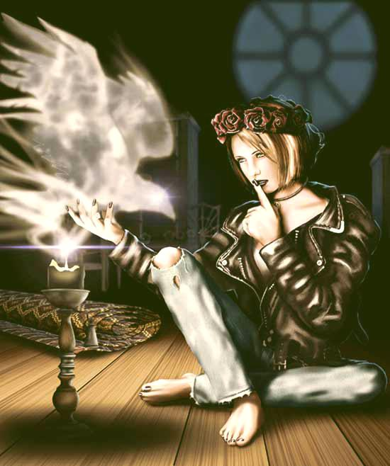 “Os Deuses só nos falarão frente a frente quando nós mesmos tivermos um rosto”
C.S. Lewis - Até que tenhamos um rosto.
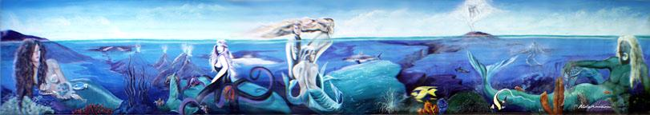
”Ainda que as sombrias máquinas estejam a funcionar.
Não se atemorize demasiado, amigo ........Quando os pedantes chamaram nossa atenção,
para a fria mecanicidade com que os acontecimentos
viriam a se desenrolar
As nossas almas disseram em surdina:
“É possível, mas existem outras coisas..."Victor Hugo ( Prefácio de Napoleão de Nothing Hill )
Guerrero/ Nuvem que passa
Conheça 0
IMAGICKLAN
A Irmandade das EstrelasO local onde os bruxos conspiram...
Clicke aqui para receber informações
Volta para Índice da Tribo


Instituto de Pesquisas Psíquicas Imagick
tel: 0xx.11.3813.4123